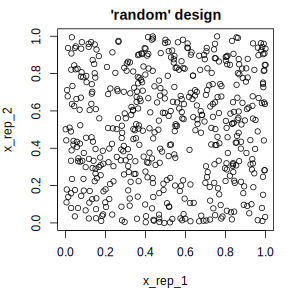
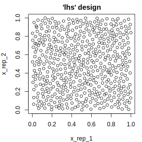

5.4 Parameters (using paradox)
The paradox package offers a language for the description of parameter spaces, as well as tools for useful operations on these parameter spaces. A parameter space is often useful when describing:
- A set of sensible input values for an R function
- The set of possible values that slots of a configuration object can take
- The search space of an optimization process
The tools provided by paradox therefore relate to:
- Parameter checking: Verifying that a set of parameters satisfies the conditions of a parameter space
- Parameter sampling: Generating parameter values that lie in the parameter space for systematic exploration of program behavior depending on these parameters
paradox is, by nature, an auxiliary package that derives its usefulness from other packages that make use of it. It is heavily utilized in other mlr-org packages such as mlr3, mlr3pipelines, and mlr3tuning.
5.4.1 Reference Based Objects
paradox is the spiritual successor to the ParamHelpers package and was written from scratch using the R6 class system.
The most important consequence of this is that all objects created in paradox are “reference-based,” unlike most other objects in R.
When a change is made to a ParamSet object, for example by adding a parameter using the $add() function, all variables that point to this ParamSet will contain the changed object.
To create an independent copy of a ParamSet, the $clone() method needs to be used:
library("paradox")
ps = ParamSet$new()
ps2 = ps
ps3 = ps$clone(deep = TRUE)
print(ps) # the same for ps2 and ps3## <ParamSet>
## Empty.ps$add(ParamLgl$new("a"))print(ps) # ps was changed## <ParamSet>
## id class lower upper nlevels default value
## 1: a ParamLgl NA NA 2 <NoDefault[3]>print(ps2) # contains the same reference as ps## <ParamSet>
## id class lower upper nlevels default value
## 1: a ParamLgl NA NA 2 <NoDefault[3]>print(ps3) # is a "clone" of the old (empty) ps## <ParamSet>
## Empty.5.4.2 Defining a Parameter Space
5.4.2.1 Single Parameters
The basic building block for describing parameter spaces is the Param class.
It represents a single parameter, which usually can take a single atomic value.
Consider, for example, trying to configure the rpart package’s rpart.control object.
It has various components (minsplit, cp, …) that all take a single value, and that would all be represented by a different instance of a Param object.
The Param class has various sub-classes that represent different value types:
ParamInt: Integer numbersParamDbl: Real numbersParamFct: String values from a set of possible values, similar to RfactorsParamLgl: Truth values (TRUE/FALSE), aslogicals in RParamUty: Parameter that can take any value
A particular instance of a parameter is created by calling the attached $new() function:
library("paradox")
parA = ParamLgl$new(id = "A")
parB = ParamInt$new(id = "B", lower = 0, upper = 10, tags = c("tag1", "tag2"))
parC = ParamDbl$new(id = "C", lower = 0, upper = 4, special_vals = list(NULL))
parD = ParamFct$new(id = "D", levels = c("x", "y", "z"), default = "y")
parE = ParamUty$new(id = "E", custom_check = function(x) checkmate::checkFunction(x))Every parameter must have:
- id - A name for the parameter within the parameter set
- default - A default value
- special_vals - A list of values that are accepted even if they do not conform to the type
- tags - Tags that can be used to organize parameters
The numeric (Int and Dbl) parameters furthermore allow for specification of a lower and upper bound.
Meanwhile, the Fct parameter must be given a vector of levels that define the possible states its parameter can take.
The Uty parameter can also have a custom_check function that must return TRUE when a value is acceptable and may return a character(1) error description otherwise.
The example above defines parE as a parameter that only accepts functions.
All values which are given to the constructor are then accessible from the object for inspection using $.
Although all these values can be changed for a parameter after construction, this can be a bad idea and should be avoided when possible.
Instead, a new parameter should be constructed.
Besides the possible values that can be given to a constructor, there are also the $class, $nlevels, $is_bounded, $has_default, $storage_type, $is_number and $is_categ slots that give information about a parameter.
A list of all slots can be found in ?Param.
parB$lower## [1] 0parA$levels## [1] TRUE FALSEparE$class## [1] "ParamUty"It is also possible to get all information of a Param as data.table by calling as.data.table.
as.data.table(parA)## id class lower upper levels nlevels is_bounded special_vals default storage_type tags
## 1: A ParamLgl NA NA TRUE,FALSE 2 TRUE <list[0]> <NoDefault[3]> logical5.4.2.1.1 Type / Range Checking
A Param object offers the possibility to check whether a value satisfies its condition, i.e. is of the right type, and also falls within the range of allowed values, using the $test(), $check(), and $assert() functions.
test() should be used within conditional checks and returns TRUE or FALSE, while check() returns an error description when a value does not conform to the parameter (and thus plays well with the checkmate::assert() function).
assert() will throw an error whenever a value does not fit.
parA$test(FALSE)## [1] TRUEparA$test("FALSE")## [1] FALSEparA$check("FALSE")## [1] "Must be of type 'logical flag', not 'character'"Instead of testing single parameters, it is often more convenient to check a whole set of parameters using a ParamSet.
5.4.2.2 Parameter Sets
The ordered collection of parameters is handled in a ParamSet2.
It is initialized using the $new() function and optionally takes a list of Params as argument.
Parameters can also be added to the constructed ParamSet using the $add() function.
It is even possible to add whole ParamSets to other ParamSets.
ps = ParamSet$new(list(parA, parB))
ps$add(parC)
ps$add(ParamSet$new(list(parD, parE)))
print(ps)## <ParamSet>
## id class lower upper nlevels default value
## 1: A ParamLgl NA NA 2 <NoDefault[3]>
## 2: B ParamInt 0 10 11 <NoDefault[3]>
## 3: C ParamDbl 0 4 Inf <NoDefault[3]>
## 4: D ParamFct NA NA 3 y
## 5: E ParamUty NA NA Inf <NoDefault[3]>The individual parameters can be accessed through the $params slot.
It is also possible to get information about all parameters in a vectorized fashion using mostly the same slots as for individual Params (i.e. $class, $levels etc.), see ?ParamSet for details.
It is possible to reduce ParamSets using the $subset method.
Be aware that it modifies a ParamSet in-place, so a “clone” must be created first if the original ParamSet should not be modified.
psSmall = ps$clone()
psSmall$subset(c("A", "B", "C"))
print(psSmall)## <ParamSet>
## id class lower upper nlevels default value
## 1: A ParamLgl NA NA 2 <NoDefault[3]>
## 2: B ParamInt 0 10 11 <NoDefault[3]>
## 3: C ParamDbl 0 4 Inf <NoDefault[3]>Just as for Params, and much more useful, it is possible to get the ParamSet as a data.table using as.data.table().
This makes it easy to subset parameters on certain conditions and aggregate information about them, using the variety of methods provided by data.table.
as.data.table(ps)## id class lower upper levels nlevels is_bounded special_vals default storage_type tags
## 1: A ParamLgl NA NA TRUE,FALSE 2 TRUE <list[0]> <NoDefault[3]> logical
## 2: B ParamInt 0 10 11 TRUE <list[0]> <NoDefault[3]> integer tag1,tag2
## 3: C ParamDbl 0 4 Inf TRUE <list[1]> <NoDefault[3]> numeric
## 4: D ParamFct NA NA x,y,z 3 TRUE <list[0]> y character
## 5: E ParamUty NA NA Inf FALSE <list[0]> <NoDefault[3]> list5.4.2.2.1 Type / Range Checking
Similar to individual Params, the ParamSet provides $test(), $check() and $assert() functions that allow for type and range checking of parameters.
Their argument must be a named list with values that are checked against the respective parameters.
It is possible to check only a subset of parameters.
ps$check(list(A = TRUE, B = 0, E = identity))## [1] TRUEps$check(list(A = 1))## [1] "A: Must be of type 'logical flag', not 'double'"ps$check(list(Z = 1))## [1] "Parameter 'Z' not available. Did you mean 'A' / 'B' / 'C'?"5.4.2.2.2 Values in a ParamSet
Although a ParamSet fundamentally represents a value space, it also has a slot $values that can contain a point within that space.
This is useful because many things that define a parameter space need similar operations (like parameter checking) that can be simplified.
The $values slot contains a named list that is always checked against parameter constraints.
When trying to set parameter values, e.g. for mlr3 Learners, it is the $values slot of its $param_set that needs to be used.
ps$values = list(A = TRUE, B = 0)
ps$values$B = 1
print(ps$values)## $A
## [1] TRUE
##
## $B
## [1] 1The parameter constraints are automatically checked:
ps$values$B = 100## Error in self$assert(xs): Assertion on 'xs' failed: B: Element 1 is not <= 10.5.4.2.2.3 Dependencies
It is often the case that certain parameters are irrelevant or should not be given depending on values of other parameters.
An example would be a parameter that switches a certain algorithm feature (for example regularization) on or off, combined with another parameter that controls the behavior of that feature (e.g. a regularization parameter).
The second parameter would be said to depend on the first parameter having the value TRUE.
A dependency can be added using the $add_dep method, which takes both the ids of the “depender” and “dependee” parameters as well as a Condition object.
The Condition object represents the check to be performed on the “dependee.”
Currently it can be created using CondEqual$new() and CondAnyOf$new().
Multiple dependencies can be added, and parameters that depend on others can again be depended on, as long as no cyclic dependencies are introduced.
The consequence of dependencies are twofold:
For one, the $check(), $test() and $assert() tests will not accept the presence of a parameter if its dependency is not met.
Furthermore, when sampling or creating grid designs from a ParamSet, the dependencies will be respected (see Parameter Sampling, in particular Hierarchical Sampler).
The following example makes parameter D depend on parameter A being FALSE, and parameter B depend on parameter D being one of "x" or "y".
This introduces an implicit dependency of B on A being FALSE as well, because D does not take any value if A is TRUE.
ps$add_dep("D", "A", CondEqual$new(FALSE))
ps$add_dep("B", "D", CondAnyOf$new(c("x", "y")))ps$check(list(A = FALSE, D = "x", B = 1)) # OK: all dependencies met## [1] TRUEps$check(list(A = FALSE, D = "z", B = 1)) # B's dependency is not met## [1] "The parameter 'B' can only be set if the following condition is met 'D ∈ {x, y}'. Instead the current parameter value is: D=z"ps$check(list(A = FALSE, B = 1)) # B's dependency is not met## [1] "The parameter 'B' can only be set if the following condition is met 'D ∈ {x, y}'. Instead the parameter value for 'D' is not set at all. Try setting 'D' to a value that satisfies the condition"ps$check(list(A = FALSE, D = "z")) # OK: B is absent## [1] TRUEps$check(list(A = TRUE)) # OK: neither B nor D present## [1] TRUEps$check(list(A = TRUE, D = "x", B = 1)) # D's dependency is not met## [1] "The parameter 'D' can only be set if the following condition is met 'A = FALSE'. Instead the current parameter value is: A=TRUE"ps$check(list(A = TRUE, B = 1)) # B's dependency is not met## [1] "The parameter 'B' can only be set if the following condition is met 'D ∈ {x, y}'. Instead the parameter value for 'D' is not set at all. Try setting 'D' to a value that satisfies the condition"Internally, the dependencies are represented as a data.table, which can be accessed listed in the $deps slot.
This data.table can even be mutated, to e.g. remove dependencies.
There are no sanity checks done when the $deps slot is changed this way.
Therefore it is advised to be cautious.
ps$deps## id on cond
## 1: D A <CondEqual[9]>
## 2: B D <CondAnyOf[9]>5.4.2.3 Vector Parameters
Unlike in the old ParamHelpers package, there are no more vectorial parameters in paradox.
Instead, it is now possible to create multiple copies of a single parameter using the $rep function.
This creates a ParamSet consisting of multiple copies of the parameter, which can then (optionally) be added to another ParamSet.
ps2d = ParamDbl$new("x", lower = 0, upper = 1)$rep(2)
print(ps2d)## <ParamSet>
## id class lower upper nlevels default value
## 1: x_rep_1 ParamDbl 0 1 Inf <NoDefault[3]>
## 2: x_rep_2 ParamDbl 0 1 Inf <NoDefault[3]>ps$add(ps2d)
print(ps)## <ParamSet>
## id class lower upper nlevels default parents value
## 1: A ParamLgl NA NA 2 <NoDefault[3]> TRUE
## 2: B ParamInt 0 10 11 <NoDefault[3]> D 1
## 3: C ParamDbl 0 4 Inf <NoDefault[3]>
## 4: D ParamFct NA NA 3 y A
## 5: E ParamUty NA NA Inf <NoDefault[3]>
## 6: x_rep_1 ParamDbl 0 1 Inf <NoDefault[3]>
## 7: x_rep_2 ParamDbl 0 1 Inf <NoDefault[3]>It is also possible to use a ParamUty to accept vectorial parameters, which also works for parameters of variable length.
A ParamSet containing a ParamUty can be used for parameter checking, but not for sampling.
To sample values for a method that needs a vectorial parameter, it is advised to use a parameter transformation function that creates a vector from atomic values.
Assembling a vector from repeated parameters is aided by the parameter’s $tags: Parameters that were generated by the $rep() command automatically get tagged as belonging to a group of repeated parameters.
ps$tags## $A
## character(0)
##
## $B
## [1] "tag1" "tag2"
##
## $C
## character(0)
##
## $D
## character(0)
##
## $E
## character(0)
##
## $x_rep_1
## [1] "x_rep"
##
## $x_rep_2
## [1] "x_rep"5.4.3 Parameter Sampling
It is often useful to have a list of possible parameter values that can be systematically iterated through, for example to find parameter values for which an algorithm performs particularly well (tuning).
paradox offers a variety of functions that allow creating evenly-spaced parameter values in a “grid” design as well as random sampling.
In the latter case, it is possible to influence the sampling distribution in more or less fine detail.
A point to always keep in mind while sampling is that only numerical and factorial parameters that are bounded can be sampled from, i.e. not ParamUty.
Furthermore, for most samplers ParamInt and ParamDbl must have finite lower and upper bounds.
5.4.3.1 Parameter Designs
Functions that sample the parameter space fundamentally return an object of the Design class.
These objects contain the sampled data as a data.table under the $data slot, and also offer conversion to a list of parameter-values using the $transpose() function.
5.4.3.2 Grid Design
The generate_design_grid() function is used to create grid designs that contain all combinations of parameter values: All possible values for ParamLgl and ParamFct, and values with a given resolution for ParamInt and ParamDbl.
The resolution can be given for all numeric parameters, or for specific named parameters through the param_resolutions parameter.
design = generate_design_grid(psSmall, 2)
print(design)## <Design> with 8 rows:
## A B C
## 1: TRUE 0 0
## 2: TRUE 0 4
## 3: TRUE 10 0
## 4: TRUE 10 4
## 5: FALSE 0 0
## 6: FALSE 0 4
## 7: FALSE 10 0
## 8: FALSE 10 4generate_design_grid(psSmall, param_resolutions = c(B = 1, C = 2))## <Design> with 4 rows:
## B C A
## 1: 0 0 TRUE
## 2: 0 0 FALSE
## 3: 0 4 TRUE
## 4: 0 4 FALSE5.4.3.3 Random Sampling
paradox offers different methods for random sampling, which vary in the degree to which they can be configured.
The easiest way to get a uniformly random sample of parameters is generate_design_random.
It is also possible to create “latin hypercube” sampled parameter values using generate_design_lhs, which utilizes the lhs package.
LHS-sampling creates low-discrepancy sampled values that cover the parameter space more evenly than purely random values.
pvrand = generate_design_random(ps2d, 500)
pvlhs = generate_design_lhs(ps2d, 500)
5.4.3.4 Generalized Sampling: The Sampler Class
It may sometimes be desirable to configure parameter sampling in more detail.
paradox uses the Sampler abstract base class for sampling, which has many different sub-classes that can be parameterized and combined to control the sampling process.
It is even possible to create further sub-classes of the Sampler class (or of any of its subclasses) for even more possibilities.
Every Sampler object has a sample() function, which takes one argument, the number of instances to sample, and returns a Design object.
5.4.3.4.1 1D-Samplers
There is a variety of samplers that sample values for a single parameter.
These are Sampler1DUnif (uniform sampling), Sampler1DCateg (sampling for categorical parameters), Sampler1DNormal (normally distributed sampling, truncated at parameter bounds), and Sampler1DRfun (arbitrary 1D sampling, given a random-function).
These are initialized with a single Param, and can then be used to sample values.
sampA = Sampler1DCateg$new(parA)
sampA$sample(5)## <Design> with 5 rows:
## A
## 1: FALSE
## 2: TRUE
## 3: FALSE
## 4: FALSE
## 5: TRUE5.4.3.4.2 Hierarchical Sampler
The SamplerHierarchical sampler is an auxiliary sampler that combines many 1D-Samplers to get a combined distribution.
Its name “hierarchical” implies that it is able to respect parameter dependencies.
This suggests that parameters only get sampled when their dependencies are met.
The following example shows how this works: The Int parameter B depends on the Lgl parameter A being TRUE.
A is sampled to be TRUE in about half the cases, in which case B takes a value between 0 and 10.
In the cases where A is FALSE, B is set to NA.
psSmall$add_dep("B", "A", CondEqual$new(TRUE))
sampH = SamplerHierarchical$new(psSmall,
list(Sampler1DCateg$new(parA),
Sampler1DUnif$new(parB),
Sampler1DUnif$new(parC))
)
sampled = sampH$sample(1000)
table(sampled$data[, c("A", "B")], useNA = "ifany")## B
## A 0 1 2 3 4 5 6 7 8 9 10 <NA>
## FALSE 0 0 0 0 0 0 0 0 0 0 0 498
## TRUE 57 47 50 41 43 42 46 48 40 41 47 05.4.3.4.3 Joint Sampler
Another way of combining samplers is the SamplerJointIndep.
SamplerJointIndep also makes it possible to combine Samplers that are not 1D.
However, SamplerJointIndep currently can not handle ParamSets with dependencies.
sampJ = SamplerJointIndep$new(
list(Sampler1DUnif$new(ParamDbl$new("x", 0, 1)),
Sampler1DUnif$new(ParamDbl$new("y", 0, 1)))
)
sampJ$sample(5)## <Design> with 5 rows:
## x y
## 1: 0.8167 0.7362
## 2: 0.5348 0.7588
## 3: 0.3967 0.7874
## 4: 0.8395 0.2918
## 5: 0.3545 0.30215.4.3.4.4 SamplerUnif
The Sampler used in generate_design_random is the SamplerUnif sampler, which corresponds to a HierarchicalSampler of Sampler1DUnif for all parameters.
5.4.4 Parameter Transformation
While the different Samplers allow for a wide specification of parameter distributions, there are cases where the simplest way of getting a desired distribution is to sample parameters from a simple distribution (such as the uniform distribution) and then transform them.
This can be done by assigning a function to the $trafo slot of a ParamSet.
The $trafo function is called with two parameters:
- The list of parameter values to be transformed as
x - The
ParamSetitself asparam_set
The $trafo function must return a list of transformed parameter values.
The transformation is performed when calling the $transpose function of the Design object returned by a Sampler with the trafo ParamSet to TRUE (the default).
The following, for example, creates a parameter that is exponentially distributed:
psexp = ParamSet$new(list(ParamDbl$new("par", 0, 1)))
psexp$trafo = function(x, param_set) {
x$par = -log(x$par)
x
}
design = generate_design_random(psexp, 2)
print(design)## <Design> with 2 rows:
## par
## 1: 0.6583
## 2: 0.9681design$transpose() # trafo is TRUE## [[1]]
## [[1]]$par
## [1] 0.4181
##
##
## [[2]]
## [[2]]$par
## [1] 0.03244Compare this to $transpose() without transformation:
design$transpose(trafo = FALSE)## [[1]]
## [[1]]$par
## [1] 0.6583
##
##
## [[2]]
## [[2]]$par
## [1] 0.96815.4.4.1 Transformation between Types
Usually the design created with one ParamSet is then used to configure other objects that themselves have a ParamSet which defines the values they take.
The ParamSets which can be used for random sampling, however, are restricted in some ways:
They must have finite bounds, and they may not contain “untyped” (ParamUty) parameters.
$trafo provides the glue for these situations.
There is relatively little constraint on the trafo function’s return value, so it is possible to return values that have different bounds or even types than the original ParamSet.
It is even possible to remove some parameters and add new ones.
Suppose, for example, that a certain method requires a function as a parameter.
Let’s say a function that summarizes its data in a certain way.
The user can pass functions like median() or mean(), but could also pass quantiles or something completely different.
This method would probably use the following ParamSet:
methodPS = ParamSet$new(
list(
ParamUty$new("fun",
custom_check = function(x) checkmate::checkFunction(x, nargs = 1))
)
)
print(methodPS)## <ParamSet>
## id class lower upper nlevels default value
## 1: fun ParamUty NA NA Inf <NoDefault[3]>If one wanted to sample this method, using one of four functions, a way to do this would be:
samplingPS = ParamSet$new(
list(
ParamFct$new("fun", c("mean", "median", "min", "max"))
)
)
samplingPS$trafo = function(x, param_set) {
# x$fun is a `character(1)`,
# in particular one of 'mean', 'median', 'min', 'max'.
# We want to turn it into a function!
x$fun = get(x$fun, mode = "function")
x
}design = generate_design_random(samplingPS, 2)
print(design)## <Design> with 2 rows:
## fun
## 1: mean
## 2: minNote that the Design only contains the column “fun” as a character column.
To get a single value as a function, the $transpose function is used.
xvals = design$transpose()
print(xvals[[1]])## $fun
## function (x, ...)
## UseMethod("mean")
## <bytecode: 0x5611f81384a0>
## <environment: namespace:base>We can now check that it fits the requirements set by methodPS, and that fun it is in fact a function:
methodPS$check(xvals[[1]])## [1] TRUExvals[[1]]$fun(1:10)## [1] 5.5Imagine now that a different kind of parametrization of the function is desired:
The user wants to give a function that selects a certain quantile, where the quantile is set by a parameter.
In that case the $transpose function could generate a function in a different way.
For interpretability, the parameter is called “quantile” before transformation, and the “fun” parameter is generated on the fly.
samplingPS2 = ParamSet$new(
list(
ParamDbl$new("quantile", 0, 1)
)
)
samplingPS2$trafo = function(x, param_set) {
# x$quantile is a `numeric(1)` between 0 and 1.
# We want to turn it into a function!
list(fun = function(input) quantile(input, x$quantile))
}design = generate_design_random(samplingPS2, 2)
print(design)## <Design> with 2 rows:
## quantile
## 1: 0.51567
## 2: 0.07007The Design now contains the column “quantile” that will be used by the $transpose function to create the fun parameter.
We also check that it fits the requirement set by methodPS, and that it is a function.
xvals = design$transpose()
print(xvals[[1]])## $fun
## function(input) quantile(input, x$quantile)
## <environment: 0x5611fa3fc498>methodPS$check(xvals[[1]])## [1] TRUExvals[[1]]$fun(1:10)## 51.56723%
## 5.641Although the name is suggestive of a “Set”-valued
Param, this is unrelated to the other objects that follow theParamXxxnaming scheme.↩︎